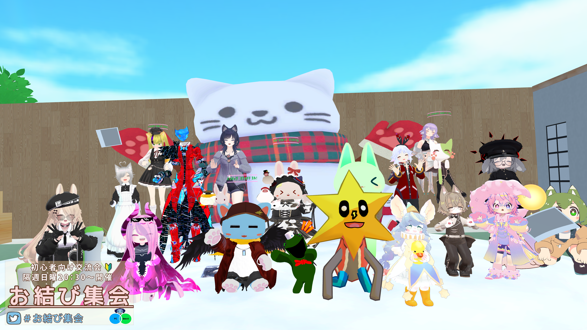
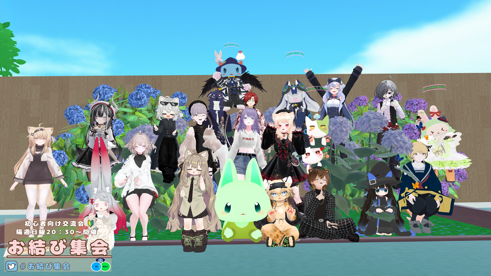
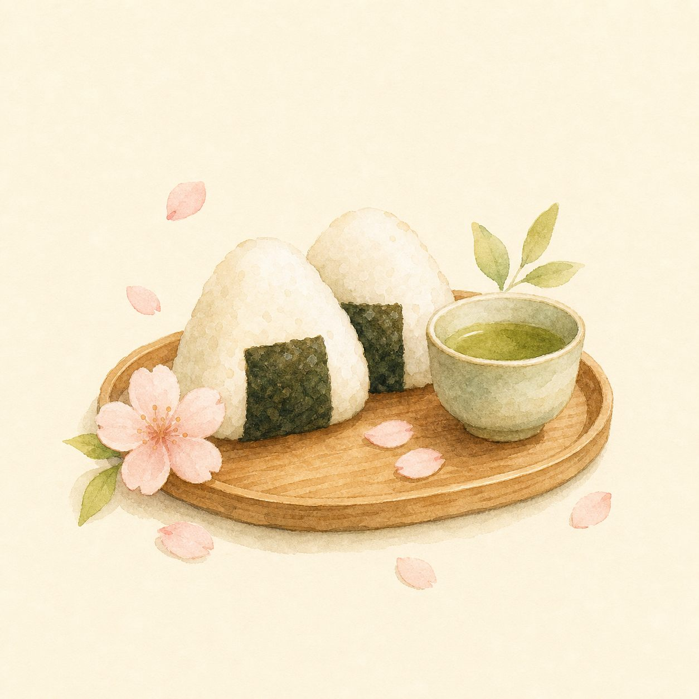

初めての方も、まずは説明を聞いてからゆっくり合流できます。
話すのが苦手な方も、無理なく同じ空間を楽しめます。
タグ機能や直感的に遊べる要素を用意しています。
どんなイベント？
「PC・VR・Quest・マイクオフ」どなたでも参加できる、まったりとした交流会です。
初心者の方やVRChatを始めたばかりの方も大歓迎。肩の力を抜いて、ゆるりと遊びに来てください。
あなたの心の声を表示する便利なタグ機能や、誰でも直感的に遊べるギミックなど、たくさんご用意しています。
初心者専用の説明部屋もあるので、初めての方も安心してお越しください。
スマホでのご参加は、ギミックや設備の仕様、複数人のご来場による負荷などにより満足のいく体験が難しいため、PC・VR・Questでのご参加を強く推奨しています。




Join Our Groupまずはグループに参加しよう。
グループに登録することでイベントに参加できます。
次回開催日もグループページよりご確認いただけます。
こんな方、大歓迎です。
イベントの様子
お結びフレンズ ぶらりさんぽ
イベント外でもみんなと遊べる緩いインスタンス、【お結びフレンズ ぶらりさんぽ】週末不定期で開催中です。
開催日はグループ通知にてお知らせします。
そんな方もお気軽にお越しくださいませ。
グループインスタンスなので、気楽にイベント外での交流を楽しむことができます。
まだグループに入っていないお友達も、グループに入っていただければ誰でもご参加可能です。
みんなで観光したり、誰でもできる簡単なゲームワールド等を予定しています。
普段なかなか表に出れない、オフなスタッフとも遊べます。
（スタッフはイベント外のカジュアルな装いとなります。）


イベントへの参加方法
グループに参加する
こちらからグループにご参加申請してください。承認後、イベントに参加できるようになります。
VRChat を起動して「グループ」を開く
メニューから「グループ」→「【お結び集会】初心者向け交流会イベント」を選択します。

「イベント」タブからインスタンスを選ぶ
イベント当日にインスタンスが作成されます。「イベント」タブから選択して入場してください。
グループ申請について
以下の方は申請を通せない場合があります。
- 「文字羅列」のユーザー名の方
- 日本語外の言語でのみ書かれたプロフの方
- プロフィール無記載の方
- 版権アバター使用・荒らし行為疑いのある方
- センシティブなグループばかりに加入している方
- 通常の会話が困難なハンディキャップをお持ちの方（DMでご相談ください）
- Xアカなし・プロフ説明なし・VRCでの活動経歴が全くない方
イベントでのトラブル防止のため、何卒ご理解くださいませ。

安心して過ごすためのお願い

VRCを始めたばかりの方も多いため、上記行為に見慣れていない方が多いです。
該当すると判断した場合、スタッフが随時お声がけいたしますので、ご理解の程よろしくお願いいたします。
ルールの守れない方が多いとワールド内に厳しい制限を設けざるを得なくなります。